PT Tools for 3ds Max
Other languages: right-click the page and choose Translate (Chrome, Edge), or use your browser's translation add-on.
Convert Priston Tale game files and work with them in 3ds Max 2020 or newer:
maps, weapons and items, monsters and characters, with textures, skeletons and animation.
(Using Blender? Open Guide_Blender.html instead.)
1. What you get
| File / folder | What it is |
|---|---|
PT_RosettaStone.exe | PristonTale - Rosetta Stone: Decode game files (.smd → .ase, textures, sounds, text, model info) and Encode your edits back. Nothing to install. |
3dsMax\ | The 3ds Max plug-in: importer, exporter and motion list (4 files). |
smd2ase.exe | The same converter for the command line (optional). |
Blender\ | The Blender add-on (see the Blender guide). |
Source\ | All source code. |
2. Install
The converter
Nothing to install. It runs on Windows 10 and 11. If Windows says "Windows protected your PC", click More info → Run anyway (the program isn't signed).
The 3ds Max plug-in (once)
Easiest: start PT_RosettaStone.exe. Under 3ds Max / Blender plug-ins it lists every 3ds Max on your PC; click Install (or Update), then restart 3ds Max. It installs into your own user scripts folder, so it needs no administrator rights (an older copy in 3ds Max's own folder is updated where it is, and Windows asks for permission). It also tells the plug-in where the converter is, so 3ds Max can open the game's .smd / .smb files directly.
After the restart there is a Priston Tale menu in the menu bar with Import…, Export… and Motions…. The importer and exporter are also under File → Import and File → Export.
By hand: close 3ds Max, copy the 4 files from the 3dsMax folder (PT_ASE_Importer.ms, PT_ASE_Exporter.ms,
PT_ASE_Reader.cs, PT_ASE_Skin.cs) into C:\Program Files\Autodesk\3ds Max 2020\scripts\startup\, and start 3ds Max.
PT_ASE_Importer.ms opens the importer without installing.3. Convert the game files
- Double-click PT_RosettaStone.exe.
- Choose an Output folder (or keep the one shown).
- Drag an
.smdfile, a folder, or the whole game folder onto the Decode box (top left). A single file converts straight away. - For a folder, the window shows how many files it found and how long it will take. Tick I understand, continue and click Convert.
- Click Open to see the results.
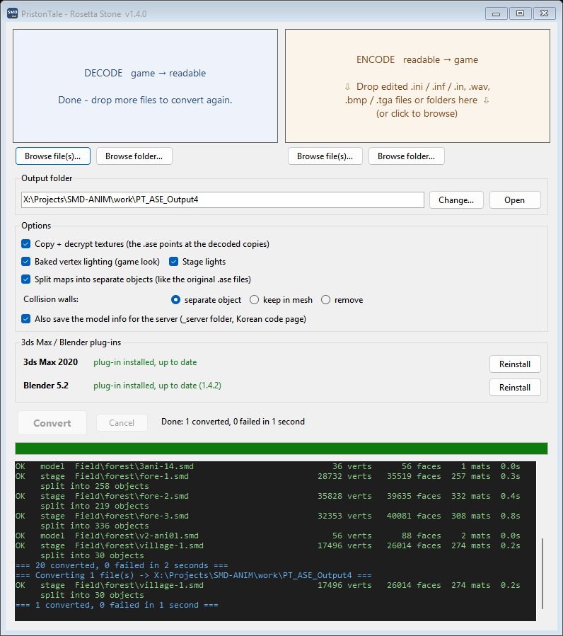
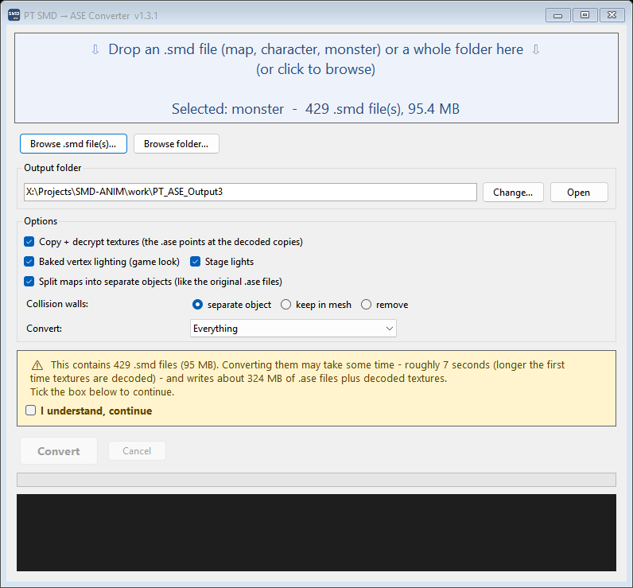
Where the game files are
Inside your Priston Tale folder:
| Folder | Contains |
|---|---|
Field\ | Maps, plus the objects placed on them (trees, buildings, animated props) |
image\Sinimage\Items\DropItem\ | Weapons (itW…), armour, shields and other items |
char\monster\ | Monsters, one folder each |
char\tmABCD\ | Player armour (bodies), heads and costumes |
char\npc\ | NPCs |
Converter options
| Option | What it does |
|---|---|
| Copy + decrypt textures | The game's textures are scrambled. This writes readable copies into a textures
folder in the output folder. Leave it ticked. |
| Baked vertex lighting | Keeps the game's lighting and shadows on maps. Leave it ticked: ENCODE gives the map exactly this lighting back. |
| Stage lights | Writes a map's light points (lamps, fires) as lights. |
| Split maps into separate objects | Cuts a map into separate objects (buildings, trees, terrain…), close to
how the original .ase files were made. Untick it to get the whole map as one mesh. |
| Collision walls | The invisible walls of a map: separate object (easy to hide), keep in mesh, or remove. |
| Also save the model info for the server | Only for the whole game folder (below): a _server copy of the model info in the game's Korean code page. |
.ase files need the textures folder.
Player armour and heads also need their class animation file (m1_motions.ase … m8_motions.ase),
which the converter writes into the same folder.Command line, for scripts: smd2ase.exe <file or folder> -o <output folder> --textures.
Run smd2ase.exe --help for every option.
The whole game folder
Drop the whole Priston Tale folder onto the Decode box (or any folder with sounds, text or .inx files in it): there is nothing to pick, every kind of file is converted.
Everything comes out readable, in the game's own folder layout:
| Game file | Becomes |
|---|---|
.smd | .ase (as above) |
.bmp / .tga | Normal images, next to their models |
.wav sound effects | Playable waves (the game scrambles their first 4 bytes). Music (Name.bgm) is saved as Name.bgm.wav. |
.inf .ini .in .sin .msg .txt .lua | Korean text, saved as UTF-8 so any editor shows it |
.inx | The compiled model info of monsters, NPCs and player models, rebuilt as the .ini /
.inf / .in it was made from: model files, detail levels, and every animation with its frames and key events |
_server\ | The model info files again in the game's Korean code page: the form the server reads |
The Encode box (top right) goes the other way for files you edited, straight away:
.ase maps and models → .smd (and .smb, see section 11),
.ini / .inf / .in → .inx, .wav, .bmp and .tga → the game's own headers,
written to game_format in the output folder. Keep the game's folder names (char\monster\…): an .inx stores a checksum of its own path.
You can drop the whole output folder: its _server copy is left out.
The game reads pictures and sounds in fewer layouts than editors write, so Encode puts them right where it can (RLE-packed TGAs from GIMP are unpacked, extra chunks in waves are left out …). Read the note lines in the log: they say what was changed, or what the game will not read as you meant - an unknown weapon or skill name, a float wave, a character the Korean code page doesn't have.
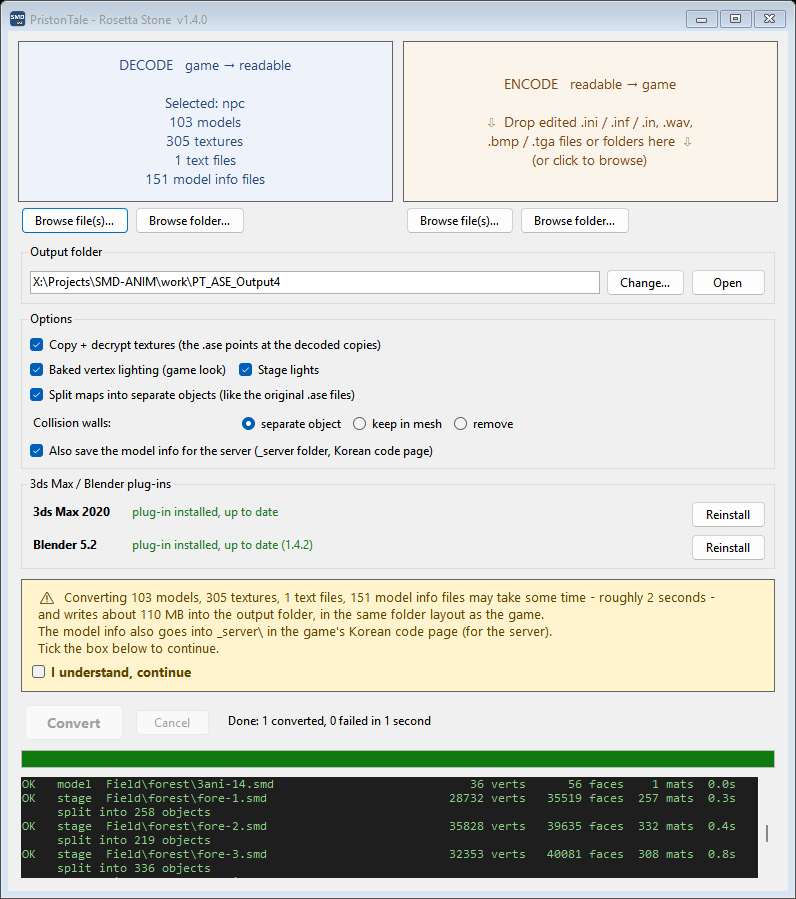
4. Import into 3ds Max
- Priston Tale → Import… (or File → Import → Priston Tale).
- Under What are you importing? click what you have (table below).
- Click Import file(s)… and choose one or more files: converted
.asefiles, or the game's own.smd/.smb(they are converted on the way, with their textures). Or use Import a whole folder… (sub-folders included). - The window closes and a progress bar runs at the bottom (Cancel stops it). When it's done, 3ds Max zooms to what you imported.
| What are you importing? | You get |
|---|---|
| Map – as seen in the game | Textures and baked lighting exactly as in the game. Collision walls are hidden. |
| Map – for editing and exporting | Everything you need to change a map and export it again: collision walls visible on their own layer, lights included (so they go back into the game). |
| Character / monster – animated | Skeleton, skin and every animation, with the motion list. Armour uses its class file (for example m1.smb) found next to it. |
| Character / monster – T-pose, with bones | Skeleton and skin in the bind pose, no animation: the pose to edit a model in. |
| Character / monster – mesh only, no bones | Just the mesh. Weapons and items have no skeleton anyway. |
| Animation only – onto the character in the scene | Pick another animation file (a class file m1.smb … m8.smb, or a monster's): its animation replaces the one on the character already in the scene, bone by bone, and its motion list opens. |
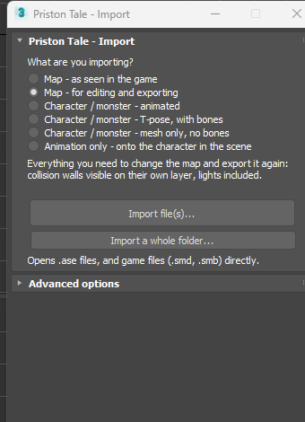
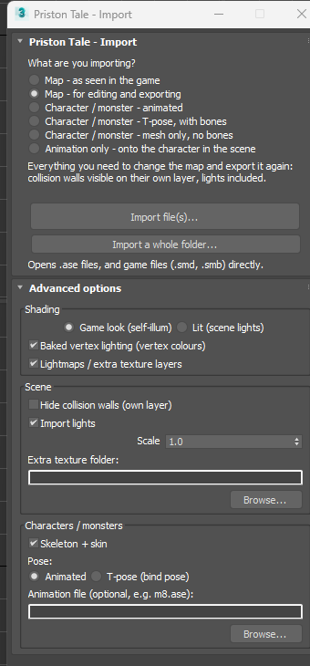
Each choice fills in the Advanced options panel (closed at first). Open it to change single settings:
| Option | What it does |
|---|---|
| Game look / Lit | Game look shows the model exactly as the game does and ignores your lights. Lit keeps the textures and lets your own lights shade it. |
| Baked vertex lighting | Uses the game's lighting stored in the map. |
| Lightmaps / extra texture layers | Dungeons and newer maps have a second, pre-lit texture layer. |
| Hide collision walls | Puts the invisible walls on their own hidden layer. |
| Import lights | Brings in a map's light points. |
| Scale | Leave at 1.0 so maps keep lining up with each other. |
| Extra texture folder | Another folder to look for textures in, by file name. The game's own scrambled textures work here too. |
| Skeleton + skin | Characters and monsters get their bones and a Skin modifier. Untick for a plain mesh. |
| Pose: Animated / T-pose | Animated loads every animation and the motion list. T-pose loads only the bones, in their rest pose. |
| Animation file | Optional. Pick a motions file yourself (see section 9). |
5. Maps
- Convert a map's
.smdfromField\, or the wholeFieldfolder. - Import the
.ase. Maps keep their real position in the world, so importing several makes them line up exactly as in the game. - The map comes in as separate objects: terrain, buildings, trees, walls. Select one to see its name in the Modify panel.
Each name ends with the object's main texture (
village-1_017_sod_roof), because the game file keeps the objects apart but not their names. - Every object has its pivot in its own middle, so the move gizmo appears on the object you select.
- The split is close to the original files but not exact: copies of the same thing next to each other (a row of torches) can come out as one object, and some big objects in a few pieces. Attach or detach as you like; the game joins everything into one map anyway.
- The invisible collision walls go on a hidden
<map>_collisionlayer. - Objects placed on the map (trees, houses, windmills) are separate
.asefiles in the same zone folder. Import them as well.
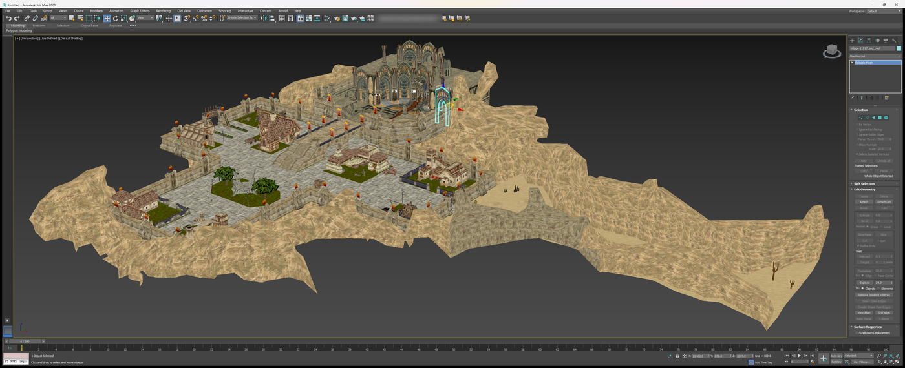
6. Weapons and items
- Convert files from
image\Sinimage\Items\DropItem\. Names starting withitWare weapons; the otherit…files are armour, shields and other items. - Import the
.ase. Weapons and items are plain textured models with no skeleton.
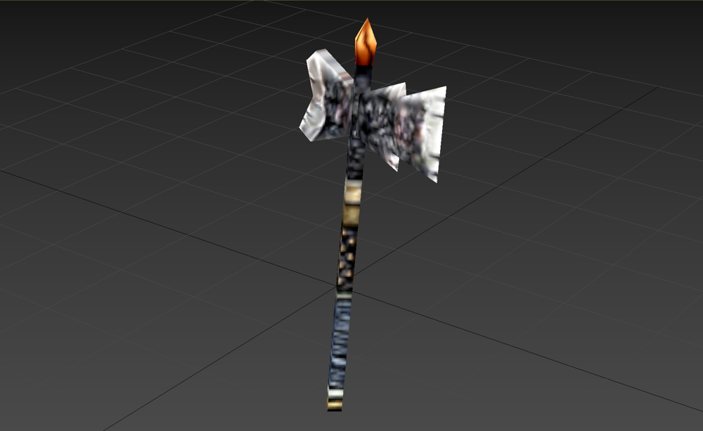
itWA105).7. Monsters
- Convert a monster's
.smdfrom its folder inchar\monster\. Each monster's animation is stored inside its own.ase, so you only need that one file. - Monsters with several detail levels keep only the high-detail model.
- Import with Character / monster – animated. The monster comes in with its bones (yellow boxes), skinned and animated, and the PT Motions list opens (walk, run, attack, damage, die…).
…-die.smd). Convert and import it the same way.
A few monsters keep their animation in a separate motion file (for example MonGknight-model uses mGknight);
the converter still puts the animation in the .ase so you can watch it.8. Characters
Player armour (bodies), heads and costumes are in char\tmABCD\. Each class shares one animation file,
which the converter writes next to the armour automatically:
| File names | Class | Animation file |
|---|---|---|
TmbA TmbB MmbA | Mechanician, Fighter, Knight | m1_motions.ase |
TfbD MfbB | Archer, Atalanta | m2_motions.ase |
MmbD | Magician | m3_motions.ase |
TmbC | Pikeman | m4_motions.ase |
MfbC | Priestess | m5_motions.ase |
TfbE | Assassin | m6_motions.ase |
MmbE | Shaman | m7_motions.ase |
TfbF | Martial Artist | m8_motions.ase |
b = body, h = head, m/f = male/female, a leading C = costume.
All of them use their class's file.
- Convert the armour (and head) you want. The class file is written into the same output folder.
- Import with Character / monster – animated. Player armour carries the whole class animation (thousands of frames), so it takes 10–20 seconds.
- The PT Motions list opens. Click a motion and the time slider jumps to just that motion. Click Play / Stop to watch it, or Whole timeline to see everything again.
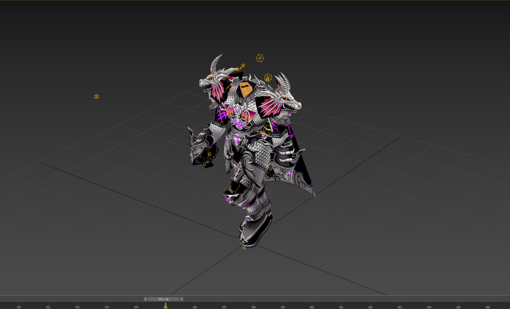
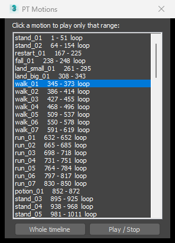
Another animation on a character
Import the character with Character / monster – T-pose, with bones (or animated), then import again with
Animation only – onto the character in the scene and pick the animation file: a class file m1.smb … m8.smb
straight from the game folder, or a converted .ase. Its keys replace the old ones on every bone of the same name.
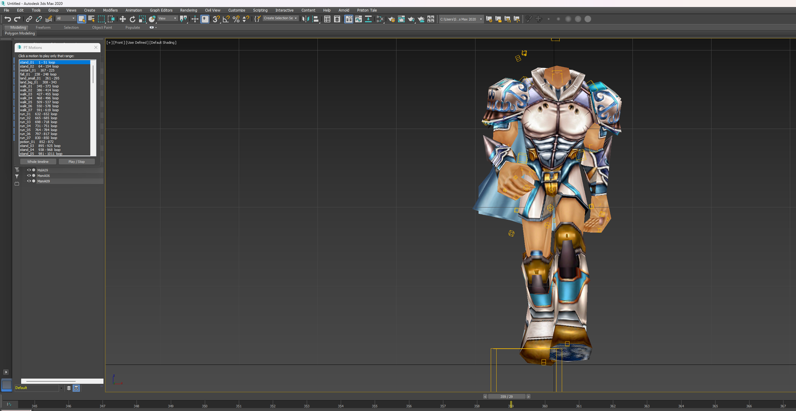
m1.smb put on it with Animation only: mid-walk, with its motion list.9. Original artist ASE files
The developers' own character files (for example TfbF01.ASE, CtfbF12.ASE) only hold the model and its
bones, so on their own they open in T-pose. To animate them:
- Convert any one armour of the same class, for example
char\tmABCD\TfbF01.smdfor Martial Artist. You now havem8_motions.asein the output folder. - Copy the original
.ASEfiles into that output folder, or pickm8_motions.aseunder Animation file. - Import with Character / monster – animated.
- If the animation file can't be found, the character comes in T-pose and a message tells you which file it looked for.
- The importer puts the character on the game's own class skeleton, so it moves exactly as in the game, even when the original file's bones were saved slightly differently.
- Textures: original files point to folders on the artist's computer. Set Extra texture folder to the
game's
char\tmABCDfolder, or keep the files in a converted output folder (itstexturesfolder is searched).
10. Export
- Priston Tale → Export… (or File → Export → Priston Tale).
- Choose Selected objects or Everything in the scene. For a map, take everything, and keep Include hidden objects ticked: the collision walls are on a hidden layer and the game needs them.
- Keep Copy textures next to the exported .ase ticked. Every texture is copied into the same folder.
- Click Export ASE… and use the original name, for example
fore-1.ase. - Drop the
.aseon the ENCODE box (section 11).
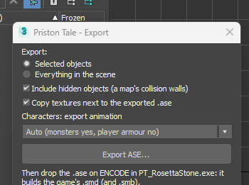
- Use this exporter, not 3ds Max's own ASCII Scene Export, which drops the lightmap UV channels.
- Material names hold the game's keywords (
wind:,wall:,BLEND_LAMP:…). Keep them: renaming a material changes how the game draws it. - An imported model exports back exactly where it was. Anything you move or edit is written with its new shape.
Characters and monsters
Select the skinned mesh (or any of its bones) and export. The exporter writes everything the game needs:
- the mesh in its rest pose, whatever frame the time slider is on;
- every bone, written the way the game reads bones;
- which bone each vertex follows (the game uses one bone per vertex: the strongest Skin weight wins);
- the animation, depending on Characters: export animation:
| Setting | What gets written |
|---|---|
| Auto (recommended) | Monsters: their animation. Player armour and heads: no animation, because the game takes it from the
class file (m1–m8). Monsters whose animation lives in a separate motion file: no animation either. |
| Always | The animation, whenever there is one. |
| Never | Bones and skin only. |
11. Putting your work back into the game
The ENCODE box builds the game's files from your .ase the way the game's own builder does.
- Back up the original files first.
- Export with the same name as the original
.smd(fore-1.aseforfore-1.smd,itWA105.aseforitWA105.smd,Tees.aseforTees.smd). - Drop the
.ase(with its textures) on ENCODE, and read the note lines in the log. - Copy what it wrote into
game_formatover the game's files, then start the game.
| Model | ENCODE writes | The game keeps using |
|---|---|---|
| Maps, map objects, weapons, items | its .smd | |
| Player armour, heads, costumes | its .smd | the class files m1.smb … m8.smb |
Monster with its animation in the same file (e.g. Tees) | its .smd and .smb | its .inx |
Monster with a separate motion file (e.g. MonGknight-model + mGknight) | the model's .smd | the motion .smb (mGknight.smb) and the .inx |
A motion file (m1.ase … m8.ase, mGknight.ase) | its .smb |
- Keep detail low where characters walk. For walking, older clients take the faces within a few metres of a character into a list of 1000 and crash when there are more (every original map stays under that). ENCODE warns and says where (in 3ds Max coordinates): a 4096-face teapot is too much, a box is fine.
- A map exported from a converted map is named and lit like the original (
village2.asebecomesfield\ricarten\village-2.smd); a model goes to the game folder its textures came from. - Try one file first, and keep your backups.
Problems?
The Priston Tale menu is missing
Check that the window shows the plug-in as installed (or that all 4 files are in the scripts\startup folder), then restart 3ds Max.
The game crashes near something I added
Too many faces in one spot. Read the ENCODE note: it says how many and where. Use a simpler model there.
The model is white or untextured
Convert with Copy + decrypt textures ticked and keep the textures folder next to the .ase files,
or set Extra texture folder. A few textures don't exist in the game at all; they're listed in missing_textures.txt.
A character comes in T-pose
Check that you chose Character / monster – animated, and that the class animation file (m1_motions.ase … m8_motions.ase) is
next to the .ase or picked under Animation file.
Nothing shows after importing
Use Zoom Extents All (Shift+Ctrl+Z). Maps sit far from the centre of the scene.
Importing a character is slow
Player armour carries thousands of frames of animation. 10–20 seconds is normal. Choose Character / monster – T-pose, with bones if you only need the model.
Credits
Thanks to Sandurr for SMD Reader (2010), the original .smd / .smb →
.ase converter, which the model conversion here grew from.
Thanks to bobsobol for PT File Patcher
(and TGAPatch before it), the tool that first made Priston Tale's .tga, .bmp, .wav and
.bgm files open in ordinary editors, shared with its source on RaGEZONE. The texture and sound decoding here
stands on that work, and on Obscura's BMPPatcher and WAVPatcher that it built on.